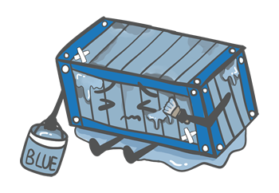
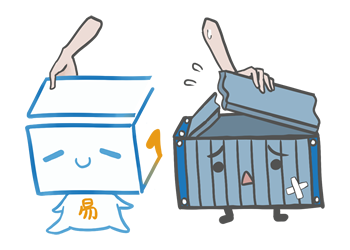
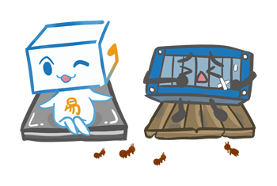

把結構與差異，看清楚。
整理官網的組合屋比較影片、柱樑與樓板說明，以及傳統貨櫃屋差異資料。
先比較每個部位，再看整體。
| 比較項目 | 易立構官網說明 | 比較其他方案時，請確認 |
|---|---|---|
| 柱樑與接合 | 主結構採一體成型方型鋼管，裁切後焊接成框。 | 柱樑材料、厚度、接合工法及結構設計文件。 |
| 樓板 | 鋼筋點焊網搭配竹節鋼筋，結合輕質水泥。 | 樓板組成、支撐方式、使用載重及維護要求。 |
| 外牆與隔熱 | 鍍 55% 鋁鋅烤漆鋼板、PU 發泡層，內外牆獨立配置。 | 各層材料、隔熱配置、接縫與防水細節。 |
| 現場工程 | 工廠整合製作，再依現地安排運輸、吊卸及配接。 | 基礎、吊運、水電與裝修是否包含在報價內。 |
工法、結構配置及用料依現場環境、結構安全、材料供應與相關法規，由專業技術團隊評估調整。實際規格、費用及施作範圍以個案確認為準。
官網原始資料 ↗官網對組合屋的說明
組合屋為了要因應容易方便拆裝，結構間以「鎖固」方式結合，空隙較大、屋體容易產生搖動。 且重量輕，抗風能力較差。 地板為夾板木地板，視為耗材，不利長久使用。 易立構結構間以「焊固」方式結合，架構間沒有空隙，不會因受風而搖動。屋體重，抗風能力優異。 地板為鋼筋混凝土為永久性素材。
此段為官網問答的比較說明；不同廠商的組合屋規格不盡相同，須以欲比較方案的材料與設計文件核對。
官網原始資料 ↗官網比較影片
易立構和中國組合屋區別所在/易立構禁得起17級陣風考驗，中國組合屋遭強風吹毀?
官網以案例影片介紹易立構與中國組合屋的差異，以及強風情境下的案例。
前往 YouTube 觀看影片標題依官網刊載內容呈現，屬個別案例介紹；基地、基礎固定與結構條件仍須個別評估。觀看影片需要網路連線。
與傳統貨櫃屋的十項差異
以下為官網「差異說明」原有內容，比較對象是傳統貨櫃屋。
01 加大尺寸

易立構較貨櫃尺寸加寬而挑高。不感壓迫、不易悶熱。
02 折舊情形
貨櫃為船公司使用後報廢， 其本質為「裝貨」而非「居住」。 曾裝載過何種物品(如放射性、油質、不明化學物質) 無法追溯查證。 全新的易立構則無此疑慮。
03 隔熱保溫

易立構全結構以輕質水泥及發泡鋼板包覆， 配合自然排熱設計，具有良好的保溫效果。 貨櫃為單層鋼板，鋼板表面溫度極高， 室內則動輒攝氏50多度。
04 塗層加工

貨櫃表漆為一般噴塗，無法長久。 易立構表層為高溫烤漆鋼板，具有良好的抗候性。
05 單元合併

貨櫃無結構框，經大面積切割後會使頂板下陷， 需將其扳正並補強，浪費工本及鋼材。 易立構則為結構框的型式，無切割補強的問題。
06 加工便利

貨櫃為浪型邊板，一經切割便會捲曲變型， 門窗安裝及室內裝潢沒有標準，因時而異、狀況不一。 易立構則於生產線上統一標準製作。
07 外部觀感

貨櫃為船公司使用後報廢淘汰，補釘凹陷實屬平常。 易立構為全新鋼板、全新外裝。
08 底部結構

貨櫃地板為木板，有受潮腐爛、老鼠打洞、白蟻啃蝕等缺點。 易立構為鋼筋混凝土，無耗損問題。 為符合海運成種需求，貨櫃地板使用19層28mm的高壓防水夾板，為市面可見最高等級的木板。如此高規的地板如會因時異地而壞損，一般輕鋼構組合屋所使用普通的15-18mm防水夾板更不堪長久使用！
09 竊盜可能

貨櫃屋沒有特色，門窗用料及位置大同小異，常有整體被吊竊情事發生。 易立構為全新訂製、深具特色，不易成為竊賊目標。
10 單元重量

貨櫃屋常態重量為2200KG，受風常有位移、翻覆情事發生。 易立構常態重量約4500KG，抗風能力相對優異。
家的想像，從一次對話開始。
加入 LINE 討論，或先整理基地與空間需求，讓場勘更有方向。
開始場勘諮詢